Five divisions. One integrated group serving Africa.
Aristopole Group operates across five specialised divisions — Mining, Energie, Infrastructures, Finances and Logistics & Trade — delivering integrated solutions from capital sourcing and project development to equipment supply and on-the-ground logistics across the DRC and sub-Saharan Africa.
Aristopole Mining
Supplying Equipment and Excellence Engineering Performance — combining international supply chains with local expertise to reduce downtime and increase productivity for the DRC's extractive industries.
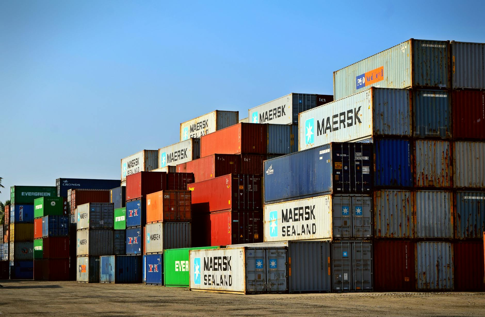
Supply Chain Logistics
Africa's logistics landscape presents unique challenges — infrastructure constraints, cross-border complexities and regulatory requirements that demand deep regional expertise. Aristopole Group provides end-to-end supply chain management that navigates these challenges with precision.
We manage procurement, transportation, warehousing and last-mile delivery across the DRC and neighbouring countries, ensuring your operations receive critical materials on time, every time.
- End-to-end procurement and sourcing management
- Cross-border freight forwarding and customs clearance
- Warehousing and inventory management in Kinshasa and Lubumbashi
- Last-mile delivery to remote mining and construction sites
- Supply chain risk assessment and contingency planning
- Vendor qualification and supplier relationship management
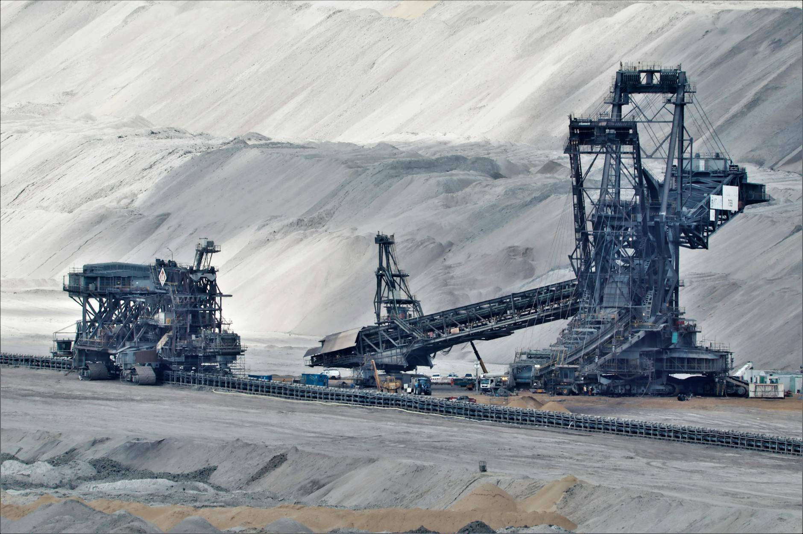
Mining Equipment & Spares
The DRC is home to some of the world's richest mineral deposits — copper, cobalt, coltan and more. Keeping mining operations running requires access to quality equipment and rapid spare parts supply. Aristopole Group is your in-country strategic partner for mining equipment procurement.
We source, procure and deliver a wide range of mining equipment including underground trackless machinery, earthmoving equipment, crushing systems and associated spare parts from globally recognised manufacturers.
- Underground trackless equipment supply and commissioning
- Earthmoving and surface mining machinery
- Crushing, screening and material handling systems
- OEM and aftermarket spare parts supply
- Equipment inspection, servicing and maintenance support
- Rapid response parts supply to minimise downtime
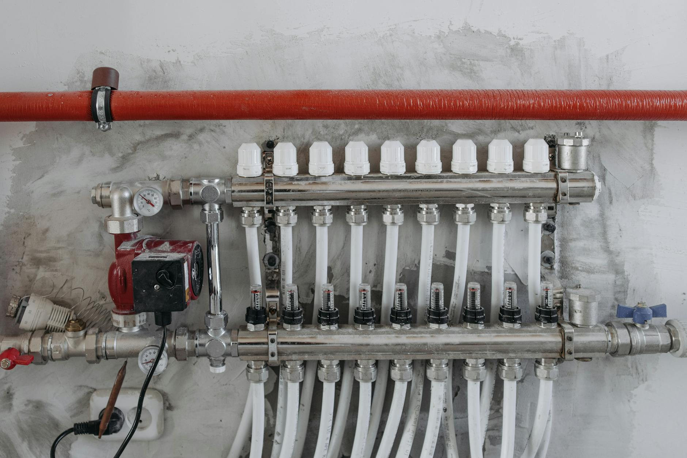
Industrial & Hydraulic Supplies
From pumps and hydraulic systems to industrial fasteners and sealing solutions, Aristopole Group supplies a comprehensive range of industrial products sourced from world-leading manufacturers. Our partnerships with premium brands ensure our clients have access to the highest quality components.
We stock and supply critical consumables and industrial equipment, maintaining local inventory to minimise lead times and keep your plant and equipment running at peak efficiency.
- Pump systems — centrifugal, submersible and industrial pumps
- Hydraulic components, hoses, fittings and cylinders
- Industrial fasteners, bolts and locking solutions
- Sealing systems and gaskets for industrial applications
- Filtration systems and hydraulic fluid management
- Technical support and product selection assistance
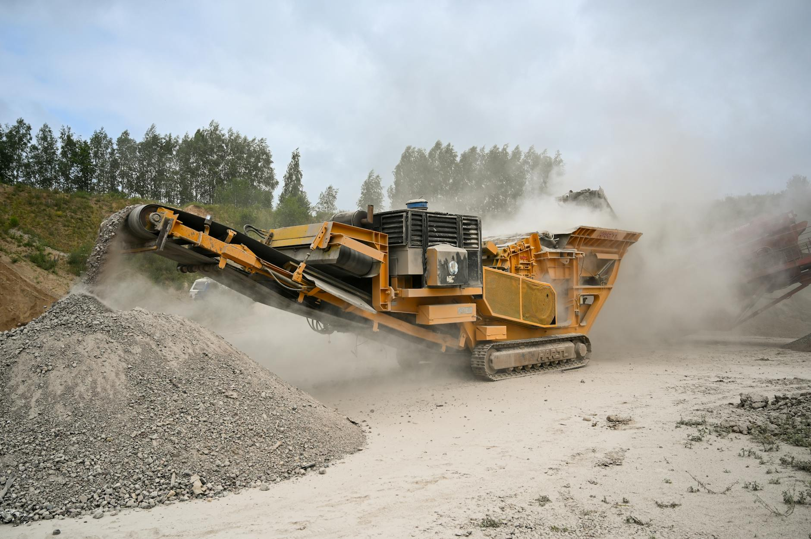
Stone Production Equipment
In partnership with Zhongxin Heavy Industry, one of China's foremost manufacturers of crushing and screening equipment, Aristopole Group supplies premium stone production machinery to construction, mining and quarrying operations across the DRC.
From complete greenfield crushing plant setups to individual machine supply and spare parts, we provide the full spectrum of stone production solutions backed by expert technical support and after-sales service.
- XHP Series hydraulic cone crushers — high efficiency, adjustable output
- Jaw crushers for primary crushing applications
- Impact crushers and vertical shaft impact (VSI) machines
- Vibrating screens and feeders for classification
- Conveyor systems and complete plant design
- Spare parts supply and on-site technical support

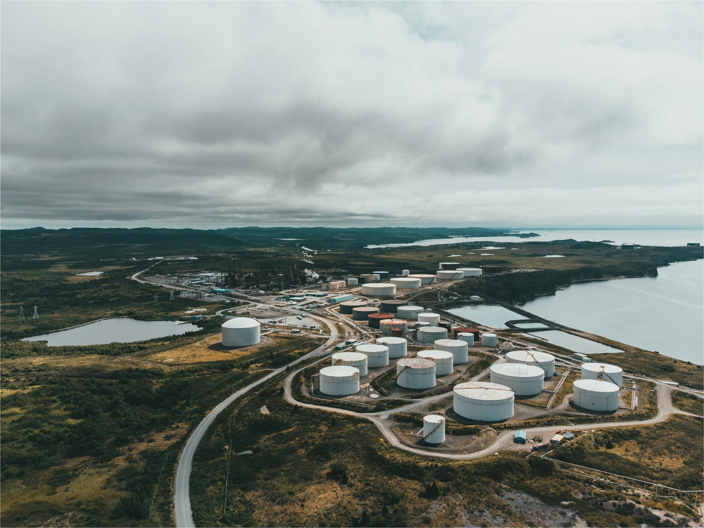
Petroleum Products
Fuel is the lifeblood of any industrial or mining operation. Aristopole Group, in partnership with Shiptech, supplies a full range of petroleum products to clients across the DRC — from diesel and heavy fuel oils to lubricants, greases and specialty industrial fluids.
Our petroleum supply chain is designed for reliability in challenging environments. We manage bulk fuel procurement, logistics and delivery to remote sites, ensuring your operations are never held back by fuel shortages.
- Diesel and heavy fuel oil supply for mining and industrial operations
- Automotive and industrial lubricants
- Hydraulic and transmission fluids
- Specialty greases and industrial lubricants
- Bulk fuel storage solutions and on-site fuel management
- Fuel quality testing and compliance certification
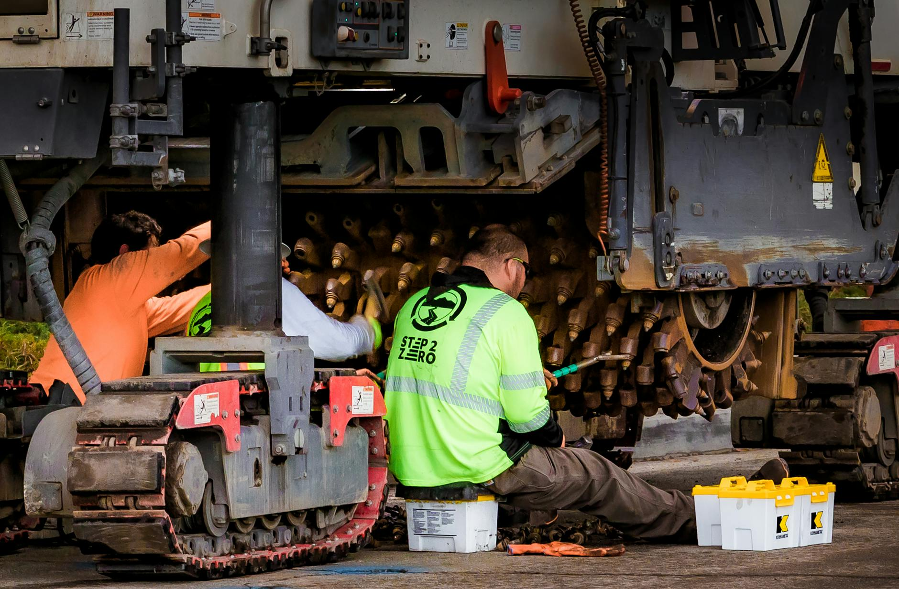
Aftermarket Mining Services
Equipment performance is only as good as the service behind it. In partnership with Pamwe Mining Services, Aristopole Group delivers comprehensive aftermarket support for mining operations — from routine maintenance and inspections to full equipment overhauls and component rebuilds.
Our technical teams have deep experience working across the DRC's most demanding mine sites, providing responsive, expert support that minimises downtime and extends equipment life.
- Planned maintenance and inspection programs
- Equipment overhaul and component rebuilds
- Welding, fabrication and structural repairs
- Electrical and instrumentation services
- On-site technical support and field service teams
- Condition monitoring and predictive maintenance programs
Aristopole Energie
Powering the Nation — delivering hydroelectric, solar and EPC energy solutions across the DRC with full project lifecycle support from feasibility to commissioning and operations & maintenance.
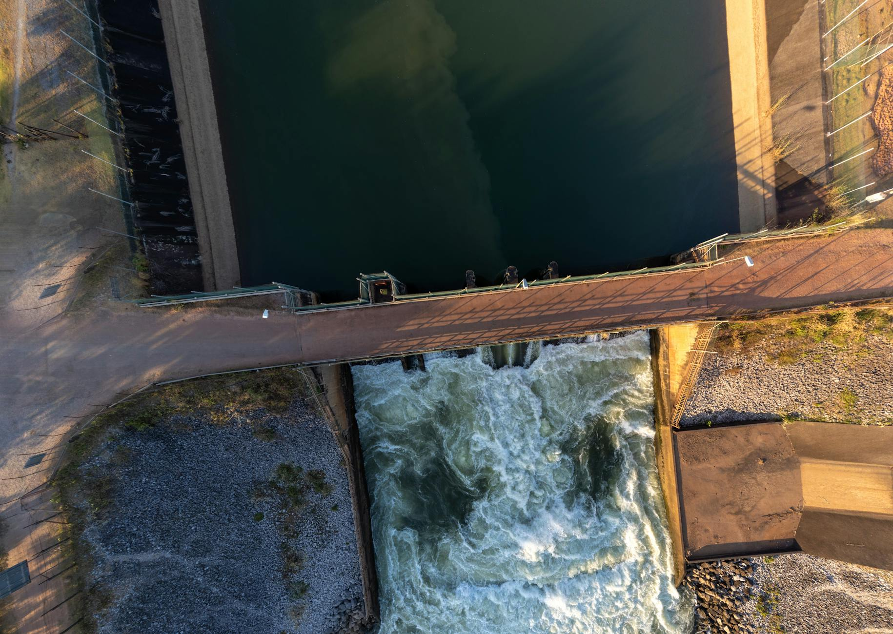
Hydroelectric Projects
Aristopole Energie leads the development and construction of small and medium-scale hydroelectric power plants across the DRC. Our hydropower team manages the full project lifecycle — from initial feasibility studies and environmental impact assessments through detailed design, civil and electromechanical works, and plant commissioning.
We specialise in the rehabilitation of existing hydro assets, restoring ageing infrastructure to full capacity and extending operational lifespans for government and private operators.
- Feasibility studies and site assessment for small and medium hydro plants
- Civil and electromechanical design and construction
- Rehabilitation and upgrading of existing hydroelectric facilities
- Turbine, generator and electrical systems supply and installation
- Commissioning, testing and operations & maintenance contracts
- Environmental compliance and community engagement planning
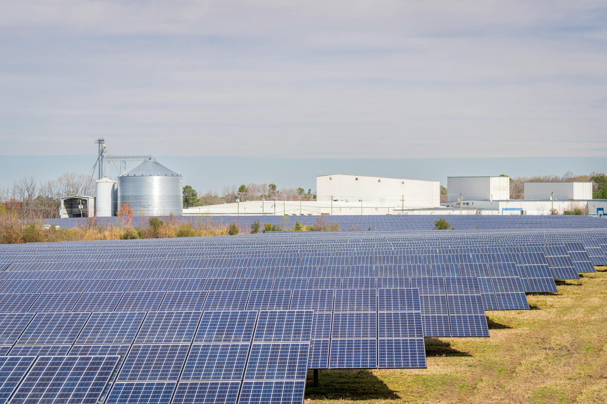
Solar & Renewable Projects
From micro-grids serving rural communities to large-scale commercial solar PV installations, Aristopole Energie handles the complete development chain. We design, supply, install and provide after-sales maintenance for solar systems integrated with battery storage — from rooftop installations to utility-scale projects.
Under the NRULI framework, we supply solar kits and mini-grid solutions for off-grid and underserved communities across the DRC, advancing the nation's rural electrification agenda.
- Micro, mini and large-scale solar PV system design and installation
- Battery energy storage system (BESS) integration
- Rural electrification — solar kits and mini-grids under NRULI framework
- EPC/Turnkey project delivery of solar power plants
- After-sales service, remote monitoring and preventive maintenance
- On-grid and off-grid hybrid system solutions
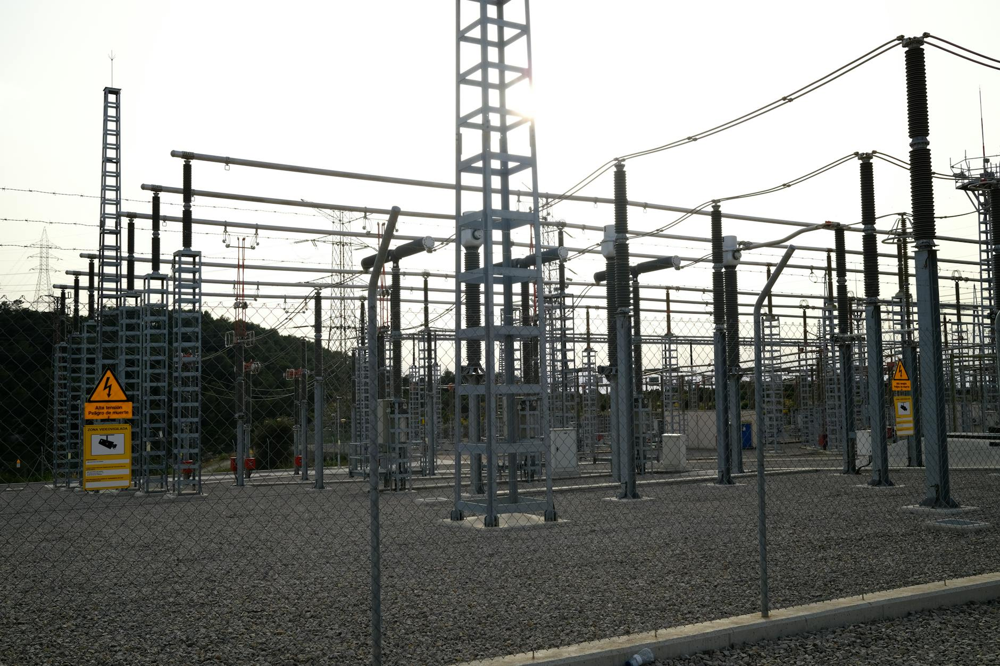
EPC Power Plants & Substations
Through our IDC construct capability, Aristopole Energie delivers full EPC (Engineering, Procurement and Construction) and turnkey solutions for power generation plants and electrical substations. We manage every stage — from detailed engineering and procurement through to civil construction, electrical installation and final commissioning.
Our teams are experienced in delivering high and medium voltage infrastructure on schedule in the DRC's demanding operating environment, partnering with international contractors to meet the highest quality and safety standards.
- Turnkey EPC delivery for power generation and substation projects
- High and medium voltage substation design and construction
- Transmission and distribution line engineering and installation
- Power plant electromechanical installation and testing
- Project management, HSE and quality assurance throughout
- Commissioning, handover and post-completion O&M support
Aristopole Infrastructures
Building Connections, Driving Development — constructing and rehabilitating roads, ports, bridges and water infrastructure using advanced engineering methods (BIM, geotechnical modelling) in partnership with international contractors.
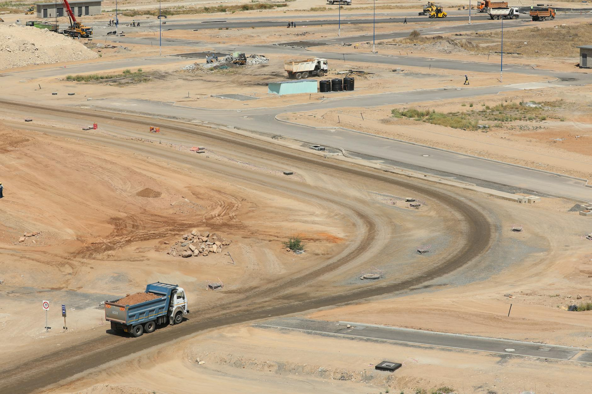
Roads & Highways
Aristopole Infrastructures constructs, rehabilitates and maintains road and highway networks across the DRC, improving connectivity for mining operations, communities and commercial corridors. We deploy geotechnical modelling and BIM technology to ensure design accuracy and construction quality in challenging terrain.
From rural feeder roads serving remote mining sites to national highway rehabilitation projects, our civil engineering teams deliver durable infrastructure built to international standards.
- New road construction and existing road rehabilitation
- National and rural highway maintenance programmes
- Geotechnical surveys, soil testing and foundation design
- BIM-assisted design and project delivery
- Drainage systems and road safety infrastructure
- Quality assurance and environmental management throughout
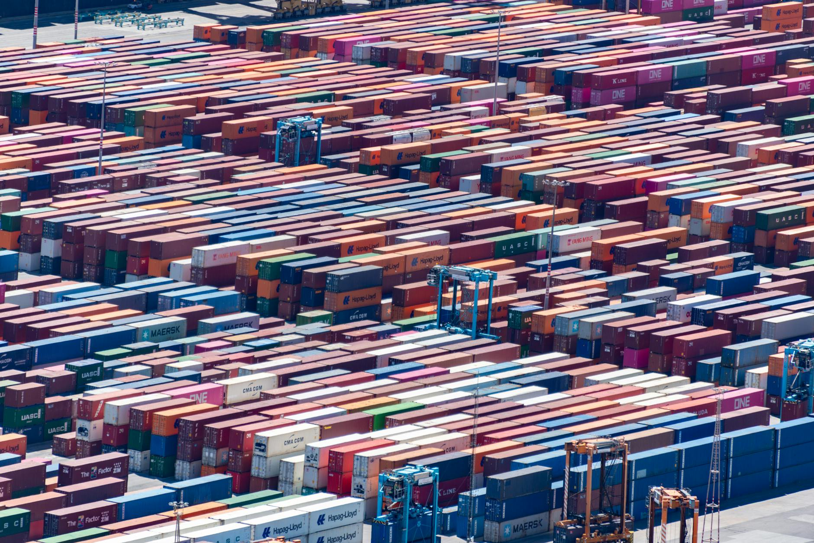
Ports & Facilities
Aristopole Infrastructures delivers container logistics facilities, quay construction, container crane installations and inland port logistics solutions. Our port infrastructure work supports the DRC's critical import and export corridors — connecting Matadi, and inland hubs in Kinshasa, Lubumbashi and Kolwezi to international shipping routes via Dar es Salaam and Mombasa.
We work with port authorities, mining companies and logistics operators to design and build facilities that handle the heavy volumes and oversized cargo that characterise the DRC's industrial economy.
- Container terminal and logistics facility construction
- Quay walls, jetties and marine structure engineering
- Container crane and heavy-lift equipment installation
- Inland port and dry port facility development
- Warehousing and cross-docking infrastructure
- Port operations planning and traffic management design
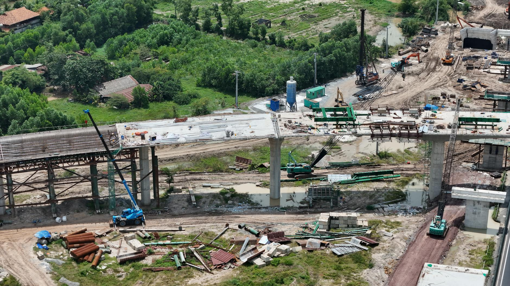
Bridges, Water & Public Infrastructure
Aristopole Infrastructures designs and constructs heavy-load and long-span bridges, viaducts and water infrastructure across the DRC. Our engineering teams apply advanced structural analysis and BIM modelling to deliver resilient infrastructure that meets the demands of heavy industrial traffic and challenging hydrological conditions.
We also deliver water drainage systems, public lighting networks and waste management facilities — urban and rural infrastructure that improves quality of life and supports sustainable development goals.
- Heavy-load and long-span bridge engineering and construction
- Viaduct and elevated roadway structures
- Drainage systems and stormwater management
- Public lighting infrastructure design and installation
- Waste management facility construction
- Structural inspection, assessment and rehabilitation of existing structures
Aristopole Finances
Enabling Growth, Enabling Value — providing tailored financing solutions for projects and companies, with a focus on industrial and infrastructure assets. Our deep understanding of the Congolese regulatory environment combined with international financial standards sets us apart.
Project Finance
Aristopole Finances structures debt and equity financing for mining, energy and infrastructure projects across the DRC. We act as a trusted intermediary between project developers and institutional investors, bringing together local regulatory expertise and international capital markets knowledge to close deals others cannot.
Our project finance team manages the full structuring process — from initial financial modelling and bankability assessment through to investor presentations, term sheet negotiation and financial close.
- Debt and equity structuring for mining, energy and infrastructure projects
- Bankability assessment and independent financial modelling
- Investor identification and capital raising mandates
- Term sheet and financing agreement negotiation support
- DFI and multilateral lender engagement (AfDB, IFC, etc.)
- Financial close management and disbursement coordination
Corporate Finance
For DRC-based enterprises, Aristopole Finances provides working capital solutions, fixed asset equipment leasing and supply chain financing — structured to fit the unique operating conditions of businesses working in the DRC. We understand local banking constraints and structure products accordingly.
Whether you are a mining contractor needing to finance a fleet, an SME requiring working capital, or a manufacturer seeking to optimise your supply chain finance — we design solutions around your specific situation.
- Working capital and revolving credit facilities for DRC enterprises
- Fixed asset and equipment leasing structures
- Supply chain financing and trade finance solutions
- Invoice discounting and receivables financing
- SME financing tailored to DRC operating conditions
- Financial restructuring and balance sheet optimisation advisory
Advisory & PPP Facilitation
Aristopole Finances provides financial advisory services to companies, developers and government entities seeking to raise capital, manage risk or structure public-private partnerships. Our team combines deep knowledge of the Congolese regulatory and banking environment with international financial modelling and investor relations expertise.
We facilitate PPPs by bridging the gap between public sector project owners and private institutional capital — providing the structuring, negotiation and due diligence support needed to bring complex partnerships to financial close.
- Financial modelling, scenario analysis and valuation
- Risk assessment and bankability review for project developers
- Investor relations strategy and capital raising advisory
- PPP transaction structuring and government liaison
- Due diligence support and information memorandum preparation
- Regulatory compliance advisory for DRC financial transactions